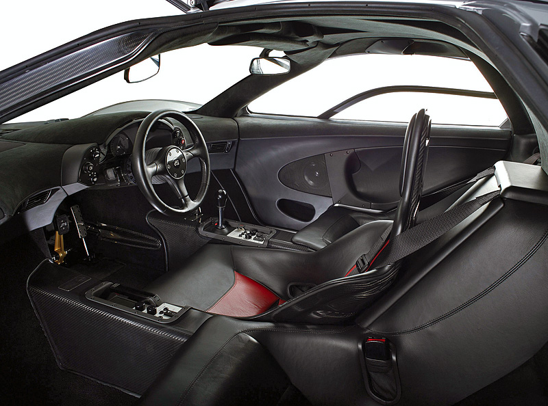
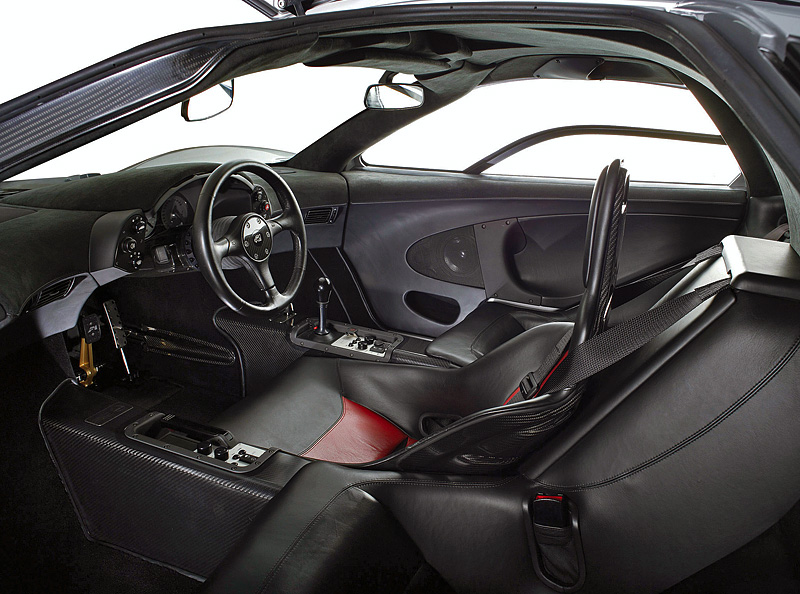

{ High Performance Automobiles }
Super Cars
{ World Exclusives }
McLaren F1
 

The McLaren F1 is a sports car designed and manufactured by McLaren Automotive. Originally a concept conceived by Gordon Murray, he convinced Ron Dennis to back the project and engaged Peter Stevens to design the exterior and interior of the car. On 31 March 1998, it set the record for the fastest road car in the world, reaching 231 mph (372 km/h) with the rev limiter enabled, and 243 mph (391 km/h) with the rev limiter removed.
The car features numerous proprietary designs and technologies; it is lighter and has a more streamlined structure than many modern sports cars, despite having one seat more than most similar sports cars, with the driver's seat located in the centre (and slightly forward) of two passengers' seating positions, providing driver visibility superior to that of a conventional seating layout. It features a powerful engine and is somewhat track oriented, but not to the degree that it compromises everyday usability and comfort. It was conceived as an exercise in creating what its designers hoped would be considered the ultimate road car. Despite not having been designed as a track machine, a modified race car edition of the vehicle won several races, including the 24 Hours of Le Mans in 1995, where it faced purpose-built prototype race cars. Production began in 1992 and ended in 1998. In all, 106 cars were manufactured, with some variations in the design.[1]
In 1994, the British car magazine Autocar stated in a road test regarding the F1, "The McLaren F1 is the finest driving machine yet built for the public road." and that "The F1 will be remembered as one of the great events in the history of the car, and it may possibly be the fastest production road car the world will ever see."[2]
In August 2013, at the Pebble Beach Concours d'Elegance, Gooding & Company auctioned off chassis 066 for a record sale price of US$8.47 million.